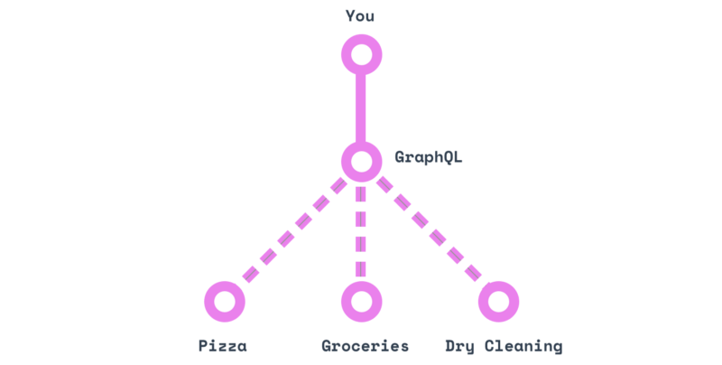
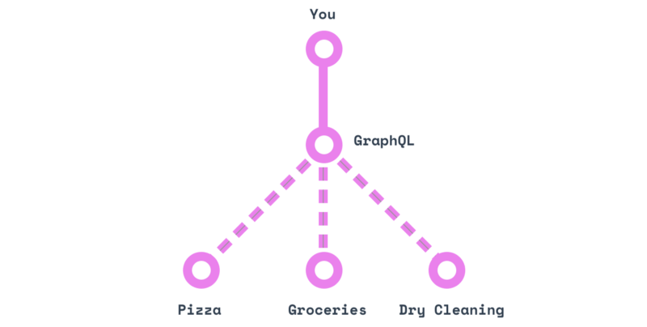
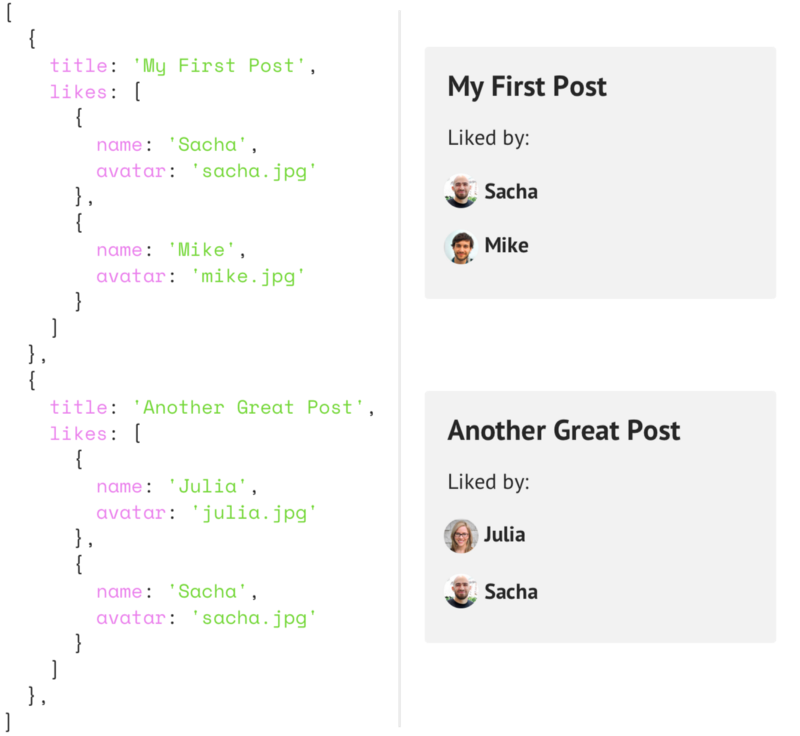

What is it?
How does it work?
created by Vlad TarnovskiyWhat is it?

What is it?
- GraphQL is a query language for client and server interaction and also the execution environment for these requests.
- GraphQL was created in order to overcome the limitations of the REST architecture. It is suitable for applications that have a lot of data and they are stored in different databases.
- The GraphQL approach is based on a simple idea — instead of creating endpoints for each object, it is enough to create one "smart" endpoint that will work with complex queries and return cumulative data to clients in the volume in which clients request them.
GraphQL:
- Created by Facebook in 2012
- GraphQL is a replacement for REST
- GraphQL uses a Query Language
- Allows the client to specify exactly what data they need
- Facilitates data aggregation from multiple sources
- Uses a type system to describe data
- All types of queries in GraphQL are sent via POST.
Advantages over REST API
- One link for all requests
- One request to many entities
- In the answer ONLY the requested information
- The request body defines the server response
 

Example
 Imagine you want to display a list of posts, and under each post a list of likes, including usernames and avatars. Actually, it's not hard, you just change the posts API to contain the likes array, which will contain the user objects.Example
But then, when developing a mobile application, it turned out that due to loading additional data the app is running slower. So you now need two endpoints, one one that returns posts with likes and one without them. Let's add one more factor: it turns out that posts are stored in a MySQL database, while likes in Oracle! What to do now?! Here the REST API has reached its limit and GraphQL comes to the rescue.REST API
GRAPHQL
GraphQL API is built on three main building blocks
- Schema
- Queries
- Resolvers
Schema
GraphQL Schema is a description of your data types on the server, the relationships between them and the logic for obtaining this data
- You have data on the server
- There are methods for obtaining this data (resolve methods)
- For these methods, you describe the data types of the input and output values (type declaration)
- Take resolve methods and type descriptions, cleverly mix and get your GraphQL Schema
Schema definition
- You describe your data with a schema (TypeDefs)
- Strongly Typed
- Types can be a Scalar (boolean, string, ID, Float) or Object with fields
Schema can generate types in Typescript
const typeDefs = gql`
type User {
id: Int
fname: String
age: Int
likes: Int
posts: [Post]
}
type Post {
id: Int
user: User
body: String
}
type Query {
users(id: Int!): User!
posts(id: Int!): Post!
}
type Mutation {
incrementLike(fname: String!) : [User!]
}
type Subscription {
listenLikes : [User]
}
Resolvers
Resolver is a function that returns data for a specific field. You can return only the data that is defined in the schema by the TypeDefs object. Recognizers can be asynchronous.
Example of resolvers functions:
const resolvers = {
Query: {
// Return the user object that matches the passed id
users(root, args) {
return users.filter(user => user.id === args.id)[0] },
// Return the post object that matches the passed id
posts(root, args) {
return posts.filter(post => post.id === args.id)[0] }
},
User: {
// Accept the user's data and return his posts
posts: (user) => {
return posts.filter(post => post.userId === user.id)
}
},
Post: {
// Accept the post data and return the user who published it
user: (post) => {
return users.filter(user => user.id === post.userId)[0]
}
},
};
Resolvers
This is an example of a simple schema that defines how and what data the client will receive from the GraphQL serve:
const resolvers = {
Mutation: {
// Change the users object: increase the number of likes
// for a user with the selected fname
incrementLike(parent, args) {
users.map((user) => {
if(user.fname === args.fname) user.likes++
return user
})
pubsub.publish('LIKES', {listenLikes: users});
return users
}
},
Subscription: {
// Listen to LIKES and respond when updating pubsub
listenLikes: {
subscribe: () => pubsub.asyncIterator(['LIKES'])
}
}
};
Queries
GraphQL queries are entities that are a request to the server to This is an analogue of GET in the REST API
Request:
{
user {
name
}
}
Response:
{
"data": {
"user": {
"name": "highload"
}
}
}
Arguments
Arguments are a key—value pair bound to a field. They can be literals and variables, they can be used on any fields. Arguments must be named, they can be optional and mandatory.
Example:
{
user(id: "2") {
age
}
}
We can set a limit on the number of posts:
{
user(id: "2") {
name
posts(limit: 10)
}
}
Aliases
For convenience, you can assign aliases — aliases to fields. Aliases help to avoid conflicts when field names match.
Request:
{
accholder: user(id: "22") {
firstname: name
}
}
Response:
{
"data": {
"accholder": {
"firstname": "high"
}
}
}
Fragments
Fragments help to specify a structure with many fields. The concept is used when you need to divide complex queries into small parts. This is especially useful when you have to combine a large number of interface components with different fragments into one sample.
Request:
fragment comparisonFields on tweet {
userName
userHandle
date
body
repliesCount
likes
}
Response:
"data": {
"sample": {
userName: "highload",
userHandle: "@highload",
date: "2022-05-01",
body: "Good",
repliesCount: 11,
tweetsCount: 300,
likes: 568,
},
Variables
The values inside the query can be made dynamic using variables
Request example:
query GetAccHolder($id: String) {
accholder: user(id: $id) {
fullname: name
}
}
And mark the variable as required with !:
query GetAccHolder($id: String!) {
accholder: user(id: $id) {
fullname: name
}
Directives
The concept of variables allows you to use directives that dynamically change the structure and form of queries depending on conditions. GraphQL uses two directives: @include and @skip.
Here we are saying to use the field if it is true (@include):
query GetFollowers($id: String) {
user(id: $id) {
fullname: name,
followers: @include(if: $getFollowers) {
name
userHandle
tweets
}
}
}
{
"id": "1",
"$getFollowers": false
}
Here we are saying to skip the field if it is true (@skip):
query GetFollowers($id: String) {
user(id: $id) {
fullname: name,
followers: @skip(if: $getFollowers) {
name
userHandle
tweets
}
}
}
{
"id": "1",
"$getFollowers": true
}
A good way to try all this in practice is to use the GraphQL API Explorer from GitHub. For example, let's try the following query:
query {
repository(owner: "graphql", name: "graphql-js"){
name
description
}
}
Example with GraphQL API Explorer from GitHub

Mutations:
- The mutation type adds data
- This is an analogue of POST and PUT in REST
- Can also specify return properties
- Pass in variables
//Mutation
mutation CreateReviewForEpisode($ep: Episode!, $review: ReviewInput!) {
createReview(episode: $ep, review: $review) {
stars
commentary
}
}
//Variables
{
"ep": "JEDI",
"review": {
"stars": 5,
"commentary": "This is a great movie!"
}
}
//Response
{
"data": {
"createReview": {
"stars": 5,
"commentary": "This is a great movie!"
}
}
}
Subscription:
The subscription type allows you to listen to changes in the database in realtime. Subscriptions use websockets for this.
subscription listenLikes {
listenLikes {
fname
likes
}
}
This request allows you to get a list of users with names and the number of likes each time the number of likes changes. Such functionality is used, for example, in the web interface to display user activity or voting results.
Client-server interaction (shortly):
- The client sends a request to the GraphQL server to read or modify data. This request is made in accordance with a scheme approved in advance.
- The GraphQL server recognizes the request by special functions — resolvers — and receives data on the requested fields.
- The client receives a response with the requested data structure, usually in JSON format.
As a result, when GraphQL can be useful?
- Striving to minimize the number of client requests.
- Refusal to denormalize data only to optimize work on the user interface.
- The presence of multiple sources of information that multiple applications work with.
THE END
Thank you for your attention!